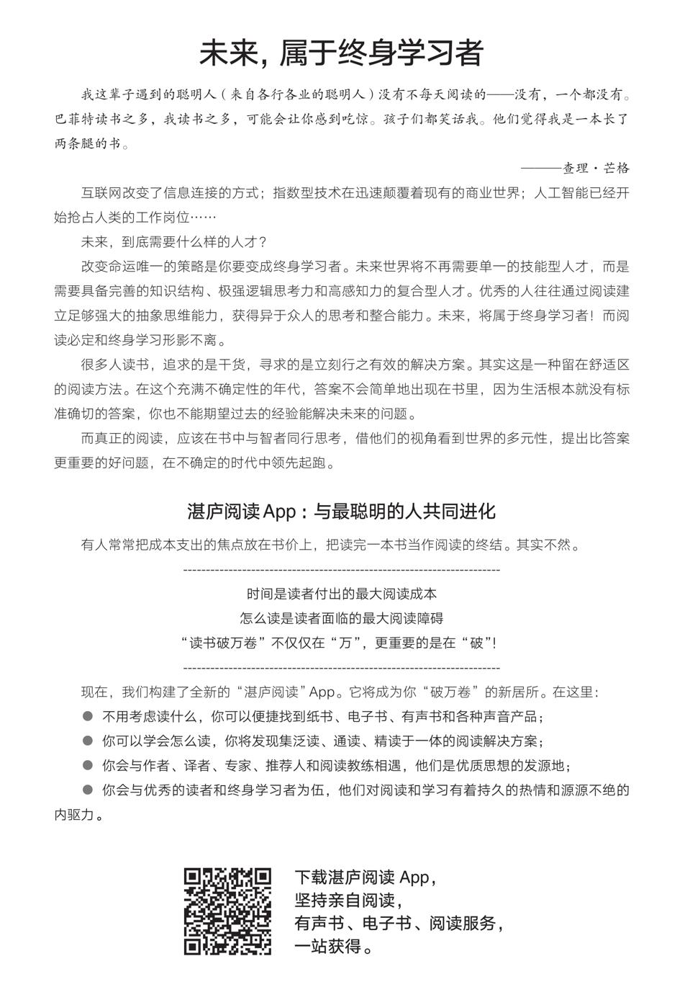
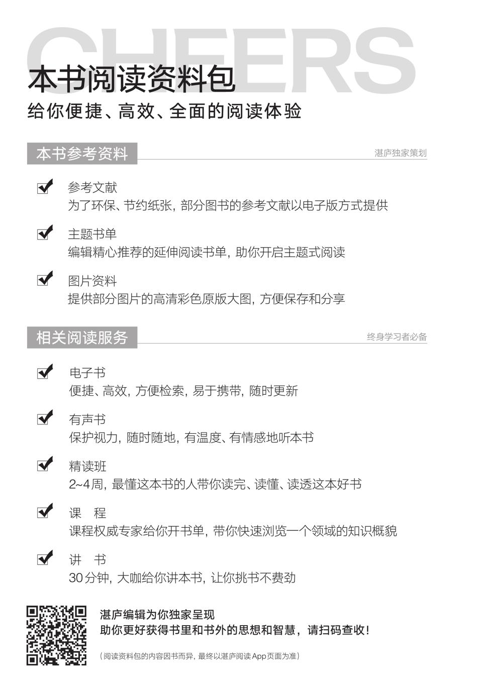

(1) “认知语言学之父”乔治·莱考夫长期以来着力研究认知语言学对人际沟通的启示，其著作《别想那只大象》中文简体字版已由湛庐引进，浙江人民出版社2020年出版。——编者注
(2) 美国知名的文化推动者、出版人约翰·布罗克曼，是“第三种文化”领军人物。由他编著的“对话最伟大的头脑·大问题系列”旨在引领读者直达科学研究的最前沿，洞悉关乎人类命运的大问题。《那些最重要的科学新发现》作为最新的一部作品，其简体中文版已由湛庐引进，中国纺织出版社2021年出版。——编者注
(3) 欧洲旧石器时代晚期文化，距今1.7万～1.15万年。——编者注
(4) 是指生物体把从外界环境中获取的营养物质转变成自身的组成物质或能量储存的过程。——编者注
(5) 本书中所有学术图表均参照原始资料绘制。为便于读者阅读，部分图表的坐标轴经过特殊处理，后同。——编者注
(6) primative是primitive的误写，英语中并没有primative一词。——编者注
(7) 法国古货币的一种。——编者注
(8) round number，如整十、整百等。——译者注
(9) 即公历。——译者注
(10) 使用词缀表达意义。——译者注
(11) 由于当时的西欧学术界觉得这个全称太啰唆，便把该书名“简化”为拉丁文“aljebra”，英文译为“algebra”，即“代数”，该书因此被称为《代数学》。——编者注
(12) et在法语中意为“和”。——译者注
(13) 世界公认的顶尖语言学家和认知心理学家史蒂芬·平克，在“语言与人性”四部曲之一《语言本能》一书中阐述了人类语言进化的奥秘。该书中文简体字版已由湛庐引进，浙江人民出版社2015年出版。——编者注
(14) “/wʌn/”“/sɪks/”“/eɪt/”是英语单词“one”“six”“eight”的发音。——编者注
(15) 一档由美国公共广播协会制作播出的儿童教育电视节目，以“大鸟”等住在芝麻街上的玩偶小伙伴作为主角。——编者注
(16) 贝壳蛋糕（madeleines）是法国的一种家庭风味小点心。以发明它的一名女仆玛德琳（Madeleines）的名字命名。法国著名作家普鲁斯特在一个午后尝到一小块贝壳蛋糕之后，回忆如泉水般涌出，写出了长达7卷的《追忆似水年华》。——译者注
(17) 拉马努扬的家族女神。被视为印度教女神拉克希米（Lakshmi）的化身。——编者注
(18) 获得性遗传理论，由拉马克首次提出。它指生物在个体生活过程中，受外界环境条件的影响，产生带有适应意义和一定方向的性状变化，并能遗传给后代的现象。——编者注
(19) 颅相学：依据头盖骨的内部结构来推断心理功能和特性。由加尔和施普茨海姆共同创立。——编者注
(20) 级联效应是由一个动作影响系统而导致一系列意外事件发生的效应。——编者注
(21) 通过把一个数中的每一个数字相加，直到和是一个一位数（和是9，要减去9得0），这个一位数就是原始数字的弃9数，等式前后的弃9数相同，可用于检验加、减、乘法运算。——译者注
(22) 认知神经科学之父迈克尔·加扎尼加在其著作《双脑记》中揭秘了左右脑分工模式。该书中文简体版已由湛庐引进，北京联合出版公司2016年出版。
(23) 资料来源请见本书“注释”。——编者注
(24) odd一词是怪异、奇数的意思，这里是双关。——译者注
(25) 1英尺=0.3048米。——编者注
(26) 1英寸=0.0254米。——编者注
(27) 法国的数学学派，以结构主义观点从事数学分析，认为数学结构没有任何事先指定的特征，它是只着眼于它们之间关系的对象的集合。——译者注
(28) 逻辑门又称“数学逻辑电路基本单元”，即执行“或”“与”“非”“或非”“与非”等逻辑运算的电路。——编者注
(29) 湿件是指与计算机软件、硬件系统紧密相连的人（程序员、操作员、管理员），以及与系统相连的人类神经系统。——译者注
(30) 知名神经科学家安东尼奥·达马西奥的颠覆性巨著，标志着20世纪时代思想的转折。该书中文简体字版已由湛庐引进，北京联合出版公司2018出版。——编者注
(31) 1磅=0.4536千克。——编者注
(32) 本书作者的经典著作之一，对人类如何演化出阅读能力、阅读能否改造大脑等问题做了解答。该书简体中文版由湛庐引进，浙江教育出版社2018年出版。——编者注